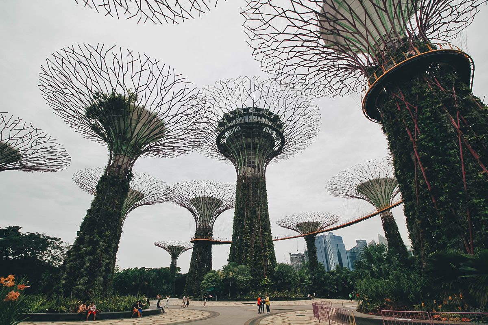

The First-Timer’s Travel Guide to Singapore
10.1.2018
Singapore is a tiny island nation in Southeast Asia that’s become one of the world’s most prosperous countries. Walk around for a day and you’ll see all the features of an ultramodern society with its impressive skyline, contemporary architecture, high-end shopping malls, and highly efficient subway system.
Gardens by the Bay is the most popular attraction on TripAdvisor and it isn’t hard to understand why. This place is mind-blowing and unlike anything we’ve ever seen. It’s home to the iconic Supertrees and two amazing conservatories — Cloud Forest and Flower Dome. If you have time for just one attraction in Singapore, then this should be it.
Marina Bay Sands is the most iconic hotel in Singapore. I’m sure you’ve seen pictures of its infinity pool on social media. It’s absolutely incredible but unfortunately, it’s only open to guests of the hotel. (Boo!) If you aren’t checked in at Marina Bay Sands, then the next best thing would be to head up to the Skypark observation deck on the 57th level to get some of the most stunning views of Singapore.
Universal Studios needs no introduction. Located on Sentosa Island, this popular theme park is home to exhilarating rides like Battlestar Galactica, Transformers, and Revenge of the Mummy. If you’re traveling with kids, then you’ll probably want to allocate a day here. Otherwise, you’ll never hear the end of it. You can buy tickets online or at the gate, but you can get discounts if you purchase them in advance through Klook or Kkday
The Singapore Flyer is one of the city’s most iconic attractions. It offers fantastic views of the city from Asia’s largest observation wheel. You can go on a standard flight but if you want something a little more memorable, how about going on one that offers drinks like Singapore Slings or champagne? For people traveling as a couple, they even offer flights with a romantic four-course dinner for two.